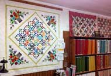
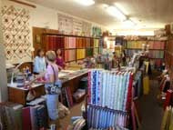

Address
4918 Topanga Canyon BoulevardWoodland Hills, California 91364
Telephone
(818) 704-8238Hours
Mondays: 10am-7pmTues - Sat: 10am-5pm
Sun: Closed
Website
www.quiltemporium.com 
Quilt Emporium
Our goal is to keep quilting alive by engaging new quilters and providing exciting fabrics, patterns, tools and notions to keep the art fresh for even the most experienced of quilters.
Today we offer a wide variety of classes for all levels of sewists and quilters. Linda Potsic, the original owner, still teaches classes at the shop. We also have a large number of Extreme Appliquérs, a group of seriously accomplished sewers who are expert in hand appliqué. Many of them teach classes for us.
From cotton, wool, soy and bamboo batting to brand name threads. You’ll find everything you need for your next quilting project in one spot. We offer fun block-of-the-month programs, and many of our knowledgeable staff has been here for years.
We know our customers by name and are interested in their lives. Stop by and find out why we are the friendliest quilt shop in Southern California.
Map & Directions
View Larger Map
- Home
- Prize Winners
- Webmaster
- © Southern California Quilters Run 2016-17